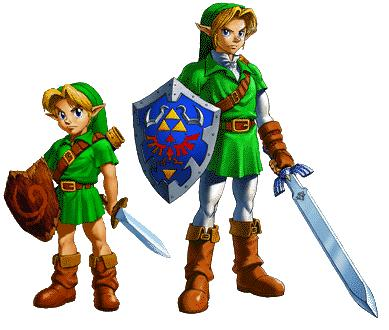

| Home | Personagens | Empresas | Fale Conosco |
|
Mario e um personagem ficticio da franquia e serie de jogos eletronicos Mario da Nintendo, criado pelo desenvolvedor e designer de jogos eletronicos japoneses Shigeru Miyamoto. Servindo como mascote da Nintendo e protagonista homonimo da serie, Mario ja apareceu em mais de 200 jogos desde sua criacao. Apesar de, originalmente, aparecer apenas em jogos de plataforma, comecando com Donkey Kong, Mario constantemente aparece em variados generos de jogos eletronicos como corrida, puzzles, party, role-playing, luta e de esportes. Mario e retratado como um encanador italiano baixinho e rechonchudo que reside no Reino dos Cogumelos. Ele repetidamente tem a missao de resgatar a Princesa Peach, do vilao Bowser e impedir seus diversos planos de destruir e dominar o reino. Mario tambem tem outros inimigos ou rivais, incluindo Donkey Kong e Wario. Desde 1995, Mario e dublado por Charles Martinet.  Link e o nome dado a uma serie de encarnacoes de um mesmo personagem ficticio, protagonista da serie The Legend of Zelda da Nintendo. Criada por Shigeru Miyamoto, a serie faz sucesso e ja recebeu, alem dos jogos, mangas e ate uma serie de desenho animado. Link e retratado como um jovem (variando de 7 a 19 anos) loiro de vestimentas verdes. Ele e da raca ficticia Hylian. Link nao fala nenhum dialogo nos jogos, apenas emitindo sons. O objetivo principal de Link normalmente e salvar Hyrule e a Princesa Zelda do antagonista da serie usando a Master Sword. Entretanto, isso nao e uma regra, ja que em alguns jogos, ele enfrenta situacoes completamente diferentes. Os pais de Link quase nunca sao mencionados, e nunca aparecem diretamente nos jogos. |